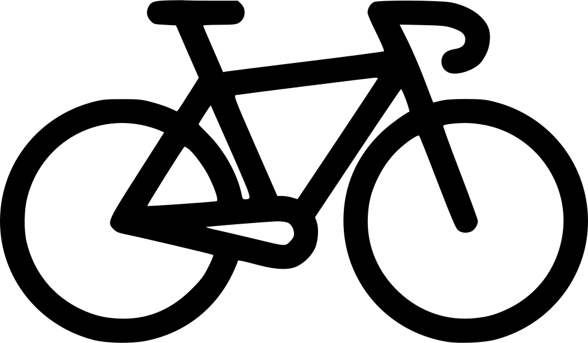

<!--The content below is only a placeholder and can be replaced.-->

<!-- Top container -->
<div class="w3-bar w3-top w3-theme-d3 w3-large" style="z-index:4">
  <button class="w3-bar-item w3-button w3-hide-large w3-hover-none w3-hover-text-light-grey" onclick="w3_open();"><i class="fa fa-bars"></i>  Menu</button>
  <span class="w3-bar-item w3-right">Trip Router</span>
</div>

<!-- Sidebar/menu -->
<nav class="w3-sidebar w3-collapse w3-white w3-animate-left w3-theme-l3" style="z-index:3;width:300px;" id="mySidebar"><br>
  <div class="w3-container w3-row">
    <div class="w3-col s6">
      
    </div>
    <!--<div class="w3-col s8 w3-bar">-->
      <!--<span>Welcome, <strong>Mike</strong></span><br>-->
      <!--<a href="#" class="w3-bar-item w3-button"><i class="fa fa-envelope"></i></a>-->
      <!--<a href="#" class="w3-bar-item w3-button"><i class="fa fa-user"></i></a>-->
      <!--<a href="#" class="w3-bar-item w3-button"><i class="fa fa-cog"></i></a>-->
    <!--</div>-->
  </div>
  <hr>
  <div class="w3-container w3-theme-l3">
    <h5>Dashboard</h5>
  </div>
  <div class="w3-bar-block w3-theme-l3">
    <a href="#" class="w3-bar-item w3-button w3-padding-16 w3-hide-large w3-dark-grey w3-hover-black" onclick="w3_close()" title="close menu"><i class="fa fa-remove fa-fw"></i>  Close Menu</a>
    <a href="#" class="w3-bar-item w3-button w3-padding w3-blue"><i class="fa fa-users fa-fw"></i>  Overview</a>
    <a href="#" class="w3-bar-item w3-button w3-padding"><i class="fa fa-bullseye fa-fw"></i>  Geo</a>
    <br/>
    <br/>
    <br/>
    <br/>
    <span class=" w3-padding"><b>Authors:</b></span><br/>
    <span class=" w3-padding">Bartłomiej Bielecki</span><br/>
    <span class=" w3-padding">Jakub Fajkowski</span><br/>
    <span class=" w3-padding">Konrad Frąc</span><br/>
  </div>
</nav>
<!-- Overlay effect when opening sidebar on small screens -->
<div class="w3-overlay w3-hide-large w3-animate-opacity" onclick="w3_close()" style="cursor:pointer" title="close side menu" id="myOverlay"></div>

<app-map></app-map>

